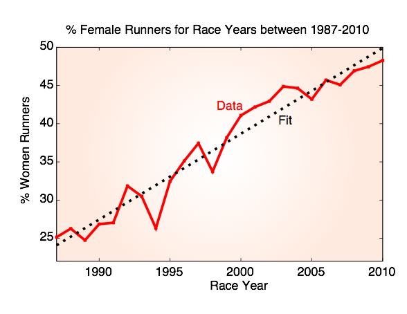
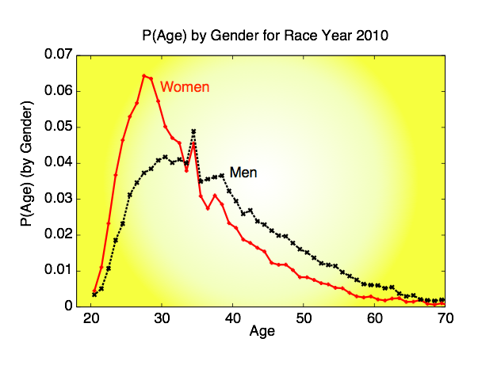
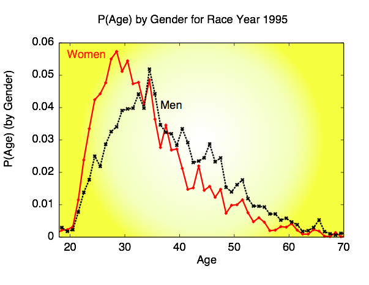
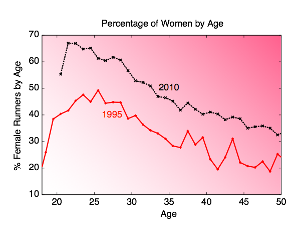
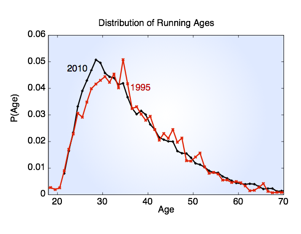
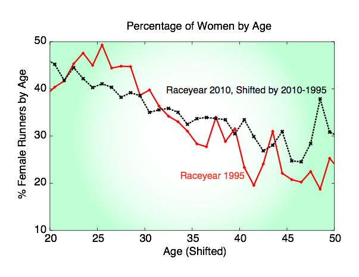

Small data
The last time we spoke we were looking at this plot of % Female runners a function of race year for NYRR weekly races with distances between 1 mile and 26.2 miles. The growth in the overall percentage of female runners is quite staggering. Going from 1 in 4 to nearly 1 in 2. Impressive. Now let’s go a bit further.
The times are changing.
Monday, April 1, 2013

First let’s look at the distribution of ages for two years (for comparison) -- 1995 and 2010.





Here P(Age) is the probability of observing that age during that year. It is computed by taking the total number of runners at that age and dividing by the total number of finishers during that race year. As you can see, there hasn’t been a significant difference in the distribution of ages for the two years. You could argue that 2010 skews slightly younger, but it’s not very significant and the 1995 data is noisy. Let’s break it down by gender now. First, 1995.
Here P(Age) is the probability of observing that age GIVEN a specific gender. It is computed by taking the total number of runners of that gender at that age during that race year and dividing by the total number of runners of that gender during that raceyear. Here you see that the average male runner is somewhere in their 30s, whereas the average female runner is a few years younger than that. The most probable age (peak of the data) for women is about 28 whereas for men it’s about 34.
Now for 2010:
Here P(Age) is computed as above for the data from 1995. Again, you can see how much the male distribution skews a bit older. With the most probable age around 35 again and the most probable age for women being around 27.
We can now look at the percentage of women runners as a function of age (that would be the # of women runners at a certain age/total number of finishers at that age x 100) for those two years.
Now we are starting to get to the heart of the matter. For the race year 2010, nearly 2/3 of the 25 years olds are women. Even in 1995, the highest ratio of women to men is for women around 25 years old. So maybe it’s just that women start running younger, leave after a few years, and men don’t start until their 30s? Well not exactly..
Note what looks like a nearly constant displacement between these two curves. Let’s take advantage of a small fact: If there were people running in 1995 and 2010 they would’ve been 15 years younger (2010-1995 = 15) in 1995 than they were in 2010. So that means a 40 year old in 2010 was 25 in 1995. So let’s shift the 2010 curve over to the left 15 years so that we can see what has happened for those runners.
Within statistical noise, these two curves collapse onto each other! What does this mean? It means that if you are a runner, and you were put in a race with only other runners of your age, even over the course of the 25 years of NYRR data your peers would have the same gender makeup no matter what year we’re talking about. This suggests that instead of talking about age of runners (which varies by race year) lets talk about the birth year of runners. We’ll leave that one for the final gender based installment of this story.